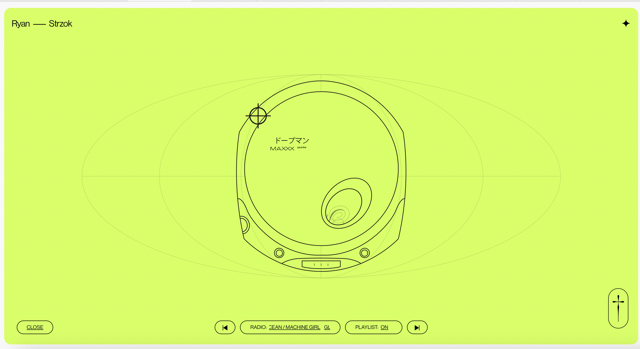
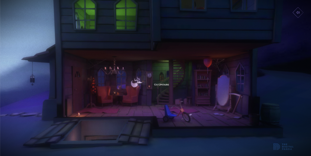
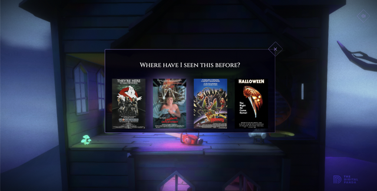
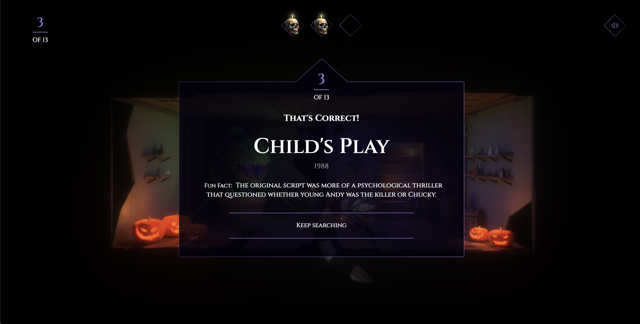

The website closest to my subject, Let toys be toys, doesn't use audio, so I can't use it for my analysis. So I analysed one of the websites listed on Awwwards website : My attention was drawn to the website created by Ryan Strzok
The website uses background music for atmosphere. I liked the fact that you could change the radio to choose the style of music. However, I don't think this adds much to the website. I would have found it interesting if the sound had changed automatically according to the mood of the digital campaigns created by the author.
As I wasn't satisfied with the results of the first website, I decided to analyse another website created by The Digital Panda.
  I really liked the background music, which really added to the site. It's a horror universe and we have to link the objects in the house with the horror films in which they appeared. The background music is similar to horror music, which creates a special, more gripping atmosphere. What's more, as you navigate through the house, there are sound effects such as evil laughter, creaking doors and creaking stairs. These sound effects also add a real plus to the navigation and atmosphere.
We can use audio to create an ambiance or to illustrate better what you say.
We can use audio to create an ambiance or to illustrate better what you say.
We can use audio to create an ambiance or to illustrate better what you say.
We can use audio to create an ambiance or to illustrate better what you say.
We can use audio to create an ambiance or to illustrate better what you say. So I analysed one of the websites listed on
We can use audio to create an ambiance or to illustrate better what you say.
We can use audio to create an ambiance or to illustrate better what you say.
*Insert paragraph introducing and reflecting upon task. Don't forget to include any other links/multi-media elements would be appropriate to the task and your chosen design. Remember that you can use the review_of_useful_tags document, W3schools or our own research to help you find the tags you're looking for!*
*Insert paragraph introducing and reflecting upon task. Don't forget to include any other links/multi-media elements would be appropriate to the task and your chosen design. Remember that you can also use lists like this:*